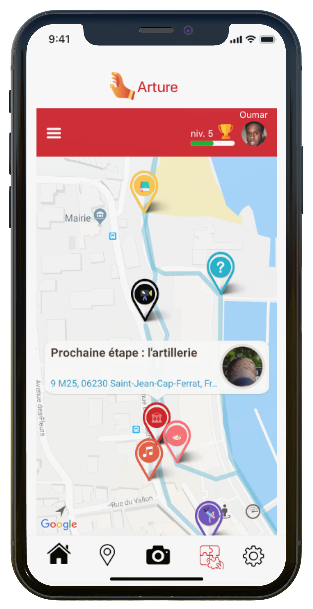
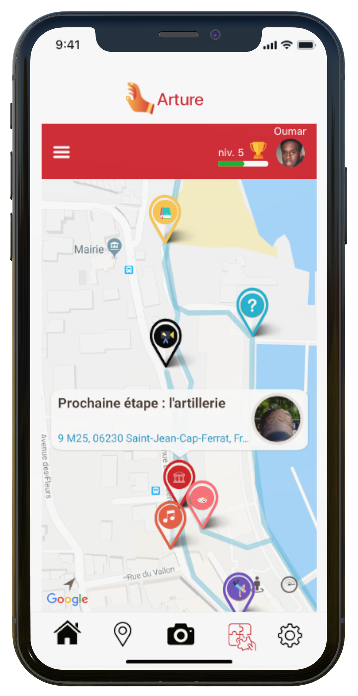

Arture est l’application qui vous fera voir la culture d’un autre oeil. Visiter des lieux qui vous étaient auparavant inconnus et laissez vous porter par les différents parcours proposés. Tu pourras ainsi créer ton personnage et grimper de niveaux en niveaux afin de débloquer des surprises.


 

Découvrez un nouveau moyen d’apprendre. Arture vous propose de vous amuser à travers divers parcours. Votre ville n’aura bientôt plus aucun secrets pour vous !
La musique, la littérature, le street art ? Faites votre choix parmi des domaines de la culture qui vous intéresse et n’attendez plus pour parcourir votre ville à travers différents parcours interactifs.

Découvrez les dernières actualistés en matière d'art ou à propos des différents lieux culturels !
Actualités
Self’Art, un clic et vous voilà en vrai oeuvre d’art !
Prenez-vous en selfie et laissez l'application chercher le tableau le plus ressemblant dans une variété de plus de 70 000 oeuvres !